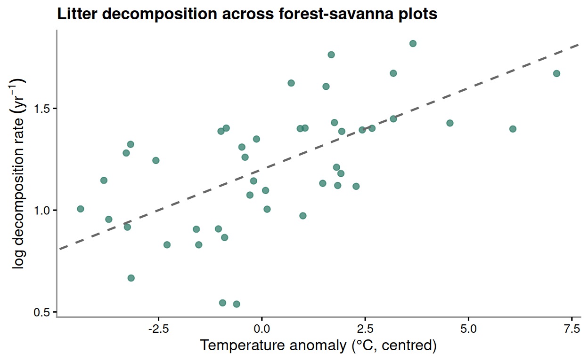
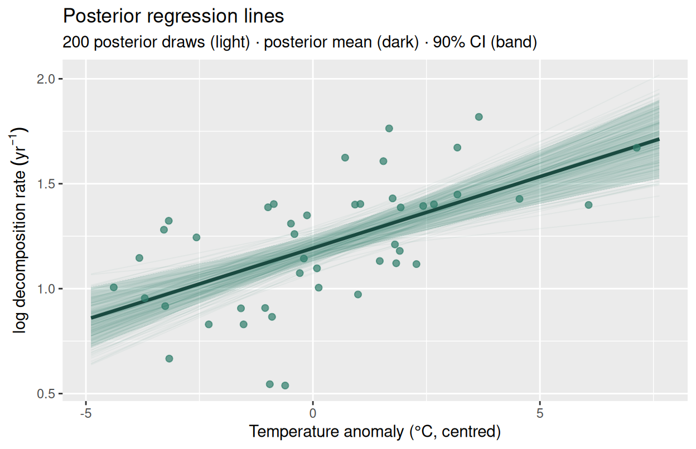
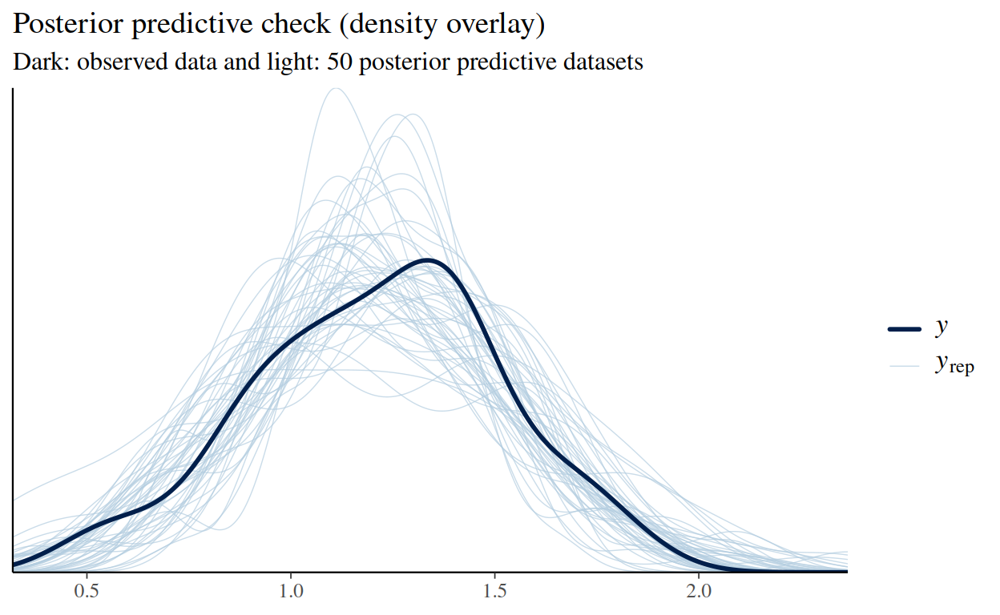
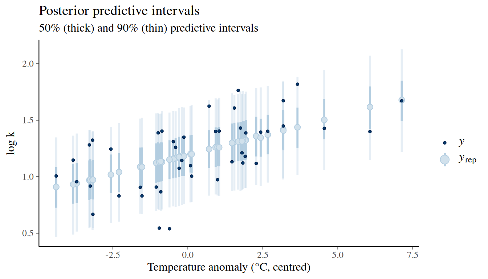

This is the chapter where Stan modelling starts in earnest. We take the model you have known since your first statistics course, \(y_i = \alpha + \beta x_i + \varepsilon_i\), and write it completely from scratch in Stan. Along the way you will meet the full chapter workflow that all subsequent model chapters follow: simulate data, write the Stan file, compile, sample, check convergence, run posterior predictive checks, and compare with the classical equivalent.
Everything in this chapter is a template. When you write a Poisson model in Chapter 11 or a hierarchical model in Chapter 8, you will be extending exactly this structure.
4.2 Learning objectives
By the end of this chapter you will be able to:
Write a complete Stan program for simple linear regression, including priors, likelihood, and a generated quantities block.
Compile and sample from the model using cmdstanr, pass data as a named R list, and extract posterior draws with posterior.
Assess convergence using \(\hat{R}\), bulk and tail ESS, and trace plots.
Perform a posterior predictive check and interpret the result.
Compare Stan posterior summaries with lm() output and explain any differences.
4.3 The model
Simple linear regression assumes that the outcome \(y_i\) is a linear function of a single predictor \(x_i\), plus Gaussian noise:
Table 4.1: Parameters of simple linear regression.
Parameter
Meaning
Constraint
\(\alpha\)
Intercept: expected \(y\) when \(x = 0\)
none
\(\beta\)
Slope: change in expected \(y\) per unit increase in \(x\)
none
\(\sigma\)
Residual SD: unexplained variation
\(> 0\)
4.4 A running example: litter decomposition
Litter decomposition is a key process in forest ecosystem nutrient cycling. We will model the relationship between mean annual temperature (°C, centred) and decomposition rate\(k\) (yr⁻¹, log-transformed) across plots in a West African forest-savanna mosaic.
We simulate data that are realistic for this system, but in your own work you would replace simulate_data() below with a call to read your own dataset.
set.seed(2025)# True parameter values (we will try to recover these)true_alpha<-1.20# log(k) at mean temperaturetrue_beta<-0.08# increase in log(k) per 1°C above meantrue_sigma<-0.25# residual SDN<-45# number of plots# Predictor: temperature anomaly (°C) relative to site meanx<-rnorm(N, mean =0, sd =2.5)# Outcome: log decomposition ratey<-rnorm(N, mean =true_alpha+true_beta*x, sd =true_sigma)# Collect into a data frame for plottingdecomp<-data.frame(x =x, y =y)ggplot(decomp, aes(x, y))+geom_point(colour ="#2e7d6a", alpha =0.75, size =2)+geom_abline( intercept =true_alpha, slope =true_beta, linetype ="dashed", colour ="grey40", linewidth =0.8)+labs( x ="Temperature anomaly (°C, centred)", y =expression(log~decomposition~rate~(yr^{-1})), title ="Litter decomposition across forest-savanna plots")

Simulated litter decomposition data. Mean annual temperature (centred, °C) predicts log decomposition rate. The dashed line is the true data-generating relationship; points scatter around it with σ = 0.25.
Why centre the predictor?
Centring \(x\) so that its mean is zero gives \(\alpha\) a meaningful interpretation: the expected outcome at the average temperature, not at \(x = 0\) which may be far outside the data range. Centring also reduces posterior correlation between \(\alpha\) and \(\beta\), which improves sampler efficiency. We will always centre (and usually scale) predictors throughout this handbook.
4.5 The Stan file
Save the following as stan/simple_regression.stan in your project directory. Every line is annotated.
data block.
We declare N (an integer, at least 1) and two vectors of length N. Stan enforces these types and dimensions at runtime. If your R list passes a vector of length 30 but the data say N = 45, Stan will error immediately, before any sampling begins.
parameters block. alpha and beta are unconstrained reals. sigma is declared with <lower=0> but notice that Stan will transform it internally to sample on an unconstrained scale (via a log transform) and back-transform for you.
model block.
The ~ notation adds the log-density of the named distribution to the running log-posterior. The vectorised likelihood y ~ normal(alpha + beta * x, sigma) is equivalent to a loop over all \(N\) observations but is faster and more readable.
generated quantities block.
This block runs after each posterior draw and is not part of the model fitting. It is the right place for:
Posterior predictive draws (y_rep): one simulated dataset per posterior draw, used for posterior predictive checks.
Point-wise log-likelihoods (log_lik): needed for LOO-CV model comparison (Chapter 14). I always include this block as it costs almost nothing and future you will be grateful.
Vectorised vs loop likelihood.
Both forms are equivalent in Stan:
Prefer the vectorised form whenever possible. Stan can apply auto-differentiation more efficiently to vectorised expressions, and the code is easier to read.
4.6 Compiling and sampling
4.6.1 Step 1: compile
mod<-cmdstan_model("stan/simple_regression.stan")
4.6.2 Step 2: prepare the data list
The names in the list must exactly match the data block variable names:
With four chains of 1 000 sampling iterations each, we collect \(4 \times 1\,000 = 4\,000\) posterior draws.
Always save your fit to disk. cmdstanr fit objects store posterior draws as CSV files in a temporary directory (/tmp/ on Linux/macOS). Those files disappear when the R session ends. The if (!file.exists(...)) is a pattern that helps with this by fitting the model once, saves it with fit$save_object(), and reloads it on subsequent renders. Delete the .rds file whenever you want to force a re-fit (e.g. after changing the model or the data). This pattern is used in every model chapter of this handbook.
4.7 Convergence diagnostics
Never interpret a Stan fit without checking convergence first.
mean and median: posterior centre. Both should be close for symmetric posteriors.
sd: posterior standard deviation, your uncertainty about the parameter.
q5 / q95: the 90% credible interval.
rhat: \(\hat{R}\). Must be \(< 1.01\). Values above this, signal that chains have not converged to the same distribution (Vehtari et al. 2021).
ess_bulk and ess_tail: effective sample sizes for the bulk and tails of the distribution. Aim for \(> 400\) each. Low ESS means the chain is autocorrelated and you need more iterations.
Always check rhat before reporting results.
An rhat of 1.05 does not mean “almost converged”, it means the chains explored different parts of the posterior and the estimate is unreliable. If rhat\(\geq 1.01\): increase iter_warmup, check your priors, or look for model misspecification.
Figure 4.1: Trace plots for the three model parameters. All four chains overlap and show no trend or drift, the textbook “fuzzy caterpillar” pattern indicating healthy convergence.
4.7.3 Posterior pair plot
Pair plots reveal correlations between parameters. Strong correlation means the sampler must navigate a curved posterior which is not a problem per se, but worth knowing.
Figure 4.2: Posterior pair plot. The mild negative correlation between alpha and beta is expected when the predictor is nearly (but not perfectly) centred. Sigma is nearly independent of both location parameters.
The pair plot confirms healthy posterior geometry across all three parameters. The marginal distributions (diagonal) are unimodal and approximately symmetric for \(\alpha\) and \(\beta\), and slightly right-skewed for \(\sigma\) which is expected for a standard deviation parameter constrained to be positive. The off-diagonal scatter plots show the joint posterior for each parameter pair: the (\(\alpha\), \(\beta\)) panel (row 2, column 1) displays a mild negative correlation, which is typical when the predictor is centred but not perfectly balanced across plots. This correlation is weak enough that it poses no sampling difficulty and the point cloud is compact and round rather than elongated. The (\(\alpha\), \(\sigma\)) and (\(\beta\), \(\sigma\)) panels show no meaningful correlation, confirming that the residual spread is estimated largely independently of the location parameters. Overall, the pair plot reveals no pathological geometry (no banana-shaped ridges, no multi-modality, no extreme elongation) indicating that the model is well-identified and the sampler explored the posterior efficiently.
4.8 Interpreting the posterior
# Extract draws as a data framedraws<-as_draws_df(fit$draws(c("alpha", "beta", "sigma")))
Figure 4.3: Marginal posterior distributions for the three parameters. Vertical dashed lines mark the true data-generating values (α = 1.20, β = 0.08, σ = 0.25). The posteriors are well-centred on the truth.
All three marginal posteriors are unimodal, approximately symmetric, and well-centred on the true data-generating values (red dashed lines: \(\alpha = 1.20\), \(\beta = 0.08\), \(\sigma = 0.25\)). The posterior for \(\alpha\) is tightly concentrated between 1.10 and 1.30, reflecting strong information about the intercept at the mean temperature. The posterior for \(\beta\) spans roughly 0.02 to 0.12, confirming a positive temperature effect on decomposition rate while retaining appropriate uncertainty given \(N = 45\) plots. The posterior for \(\sigma\) is slightly right-skewed, which is a universal feature of variance parameters constrained to be positive, with mass concentrated between 0.20 and 0.32, close to the generating value of 0.25.
Why plot marginal posteriors after fitting?
Marginal posterior plots serve several practical purposes that a summary table alone cannot:
Parameter recovery check. When working with simulated data (as here), overlaying the true value confirms the model and the sampler are both working correctly. A posterior that systematically misses the truth signals a bug in the Stan code or a data-preparation error.
Shape diagnosis. A bimodal or heavily skewed posterior often indicates an identification problem as two parameter values explain the data equally well. This is invisible in a table of means and intervals.
Prior-data conflict detection. If the posterior is pressed hard against the boundary of the prior, the prior may be too restrictive. The plots make this visible immediately.
Communication. For non-technical collaborators or reviewers, a histogram of plausible values is more intuitive than a credible interval written as \([0.02, 0.12]\).
On real data, where the truth is unknown, the marginal posteriors become your primary window into what the model has learned. Always inspect them before reporting any summary statistic.
4.8.2 Posterior for the slope
The slope \(\beta\) is usually the parameter of scientific interest.
beta_draws<-draws$betacat("Posterior mean of beta: ", round(mean(beta_draws), 3), "\n")
#> Posterior mean of beta: 0.068
cat("Posterior SD of beta: ", round(sd(beta_draws), 3), "\n")
The posterior for \(\beta\) is precisely estimated and unambiguously positive. The posterior mean of 0.068 indicates that each 1°C increase in mean annual temperature above the site mean is associated with an expected increase of 0.068 in log decomposition rate which correspond to a multiplicative factor of \(e^{0.068} \approx 1.07\), or roughly a 7% acceleration in decomposition per degree of warming. The true data-generating value was \(\beta = 0.08\); the posterior mean falls slightly below this, which is entirely normal sampling variation with \(N = 45\) observations.
The posterior standard deviation of 0.015 reflects moderate uncertainty: the 90% credible interval runs from 0.043 to 0.092, meaning the data are consistent with effects ranging from a modest 4% to a more substantial 10% acceleration per degree. Crucially, the entire interval lies above zero.
The directional probability \(P(\beta > 0 \mid \text{data}) = 1.000\) means that not a single one of the 4 000 posterior draws fell below zero. This is strong evidence for a positive temperature effect, and a statement that a frequentist \(p\)-value cannot make directly: it is a probability about the parameter itself, not about hypothetical replications of the experiment.
A note on \(P(\beta > 0 \mid \text{data}) = 1\).
A value of exactly 1.000 (to three decimal places) does not mean certainty — it means the probability of a negative effect is smaller than \(1/4000 = 0.00025\), which is the resolution of our posterior sample. If you need a more precise lower bound, increase iter_sampling to 10 000 or more. In practice, \(P > 0.99\) is already strong evidence for a directional conclusion in most ecological applications.
4.8.3 The regression line and its uncertainty
Classical regression plots a single fitted line. A Bayesian analysis produces a distribution of plausible lines, one per posterior draw.
x_seq<-seq(min(x)-0.5, max(x)+0.5, length.out =200)# Sample 200 draws for line displayidx<-sample(nrow(draws), 200)lines_df<-do.call(rbind, lapply(idx, function(i){data.frame( x =x_seq, y =draws$alpha[i]+draws$beta[i]*x_seq, draw =i)}))# Posterior mean line and 90% CI bandband_df<-data.frame(x =x_seq)mu_mat<-outer(draws$alpha, rep(1, length(x_seq)))+outer(draws$beta, x_seq)band_df$mean<-colMeans(mu_mat)band_df$lo<-apply(mu_mat, 2, quantile, 0.05)band_df$hi<-apply(mu_mat, 2, quantile, 0.95)ggplot()+geom_line(data =lines_df,aes(x, y, group =draw), colour ="#2e7d6a", alpha =0.05, linewidth =0.35)+geom_ribbon(data =band_df,aes(x, ymin =lo, ymax =hi), fill ="#2e7d6a", alpha =0.20)+geom_line(data =band_df,aes(x, mean), colour ="#1a4a40", linewidth =1.1)+geom_point(data =decomp,aes(x, y), colour ="#2e7d6a", alpha =0.7, size =1.8)+labs( x ="Temperature anomaly (°C, centred)", y =expression(log~decomposition~rate~(yr^{-1})), title ="Posterior regression lines", subtitle ="200 posterior draws (light) · posterior mean (dark) · 90% CI (band)")

Figure 4.4: Posterior regression lines. Each light line is one draw from the posterior for (α, β). The dark line is the posterior mean. The shaded band is the 90% credible interval for the conditional mean E[y|x]. Data points are shown in teal.
4.9 Posterior predictive check
A posterior predictive check (PPC) asks: if the model is correct, do datasets simulated from the posterior look like the data we actually collected? If the answer is no, the model is misspecified in some identifiable way.
The generated quantities block already computed y_rep, one simulated dataset per posterior draw. We use bayesplot to compare the distribution of replications with the observed data.
y_rep<-as_draws_matrix(fit$draws("y_rep"))ppc_dens_overlay(y, y_rep[1:50, ])+labs( title ="Posterior predictive check (density overlay)", subtitle ="Dark: observed data and light: 50 posterior predictive datasets")

Figure 4.5: Posterior predictive density overlay. The dark line is the observed data distribution; the light lines are 50 simulated datasets from the posterior. Good overlap indicates the normal linear model is a reasonable description of these data.
The density overlay shows good overall agreement between the observed data (dark line) and the 50 posterior predictive datasets (light lines). The observed distribution is unimodal, centred around \(\log k \approx 1.3\), and the cloud of replicated densities envelops it throughout its full range. This confirms that the normal linear model captures the central tendency and spread of the data adequately.
Two minor features are worth noting. First, the observed density peak is slightly sharper than the average replicated peak. This suggest that the model may spread predictions marginally wider than the data strictly require but it is a mild over-dispersion that is unlikely to affect inference on \(\beta\). Second, a handful of light lines show secondary bumps near 0.5 and 2.0 that the observed data do not exhibit; these are expected random fluctuations given only \(N = 45\) observations, not evidence of misspecification. Overall, no systematic discrepancy is detectable and the normal likelihood is a defensible choice for these data.
ppc_intervals(y, y_rep, x =x, prob =0.5, prob_outer =0.9)+labs( x ="Temperature anomaly (°C, centred)", y =expression(log~k), title ="Posterior predictive intervals", subtitle ="50% (thick) and 90% (thin) predictive intervals")

Figure 4.6: Posterior predictive intervals for each observation. Points are observed y values; intervals are 50% (thick) and 90% (thin) predictive intervals. Most observations fall within their predictive interval, consistent with a well-specified model.
The interval plot reinforces the density overlay conclusion at the level of individual observations. The positive slope of both the observed points (dark) and the predictive interval centres (light) across the temperature gradient is clearly visible, consistent with the positive \(\beta\) estimated above. The 90% predictive intervals (thin bars) contain the large majority of observed values, and the 50% intervals (thick bars) contain roughly half, both in line with what a well-calibrated model should produce.
Interval width is approximately constant across the temperature range, as expected under the homoscedastic normal model: \(\sigma\) does not depend on \(x\). If the intervals had widened or narrowed systematically with temperature, that would signal heteroscedasticity and motivate a model extension (for example, modelling \(\log \sigma\) as a function of \(x\)). No such pattern is visible here.
One observation near \(x \approx 0\), \(\log k \approx 0.55\) falls just below its 90% interval. With 45 observations, one or two points outside the 90% interval is statistically expected and does not constitute evidence against the model. If such a point were influential (high leverage), it would merit investigation; here, centred near the mean of \(x\), its leverage is low.
What to look for in a PPC.
Density overlay (ppc_dens_overlay): the dark observed-data line should be plausibly consistent with the cloud of light replicated lines. Systematic displacement or different shape signals misspecification.
Interval plot (ppc_intervals): roughly 90% of observed points should fall within the 90% intervals. Systematic over- or under-dispersion is a sign that \(\sigma\) is mis-estimated or the functional form is wrong.
PPC as a habit, not a formality.
A posterior predictive check that passes, as here, is not merely a box to tick. It establishes the licence to interpret the posterior quantities (\(\beta\), credible intervals, predictive statements) at face value. A failing PPC, by contrast, signals that those quantities describe a model that does not match the data, and any inference drawn from them is suspect regardless of how small the credible intervals are.
4.10 Comparison with lm()
For a well-specified model with a large sample and a weakly informative prior, the Bayesian posterior mean and the OLS estimate converge. Let us verify this.
# Classical OLS fitlm_fit<-lm(y~x, data =decomp)# Stan posterior meansstan_means<-fit$summary(c("alpha", "beta", "sigma"))|>select(variable, mean, sd, q5, q95)# OLS estimates and confidence intervalslm_ci<-confint(lm_fit, level =0.90)lm_summary<-data.frame( variable =c("alpha", "beta", "sigma"), ols_est =c(coef(lm_fit)[["(Intercept)"]],coef(lm_fit)[["x"]],sigma(lm_fit)), ols_lo =c(lm_ci["(Intercept)", 1], lm_ci["x", 1], NA), ols_hi =c(lm_ci["(Intercept)", 2], lm_ci["x", 2], NA))# Print side by sidemerge(stan_means, lm_summary, by ="variable")|>knitr::kable( digits =3, caption ="Stan posterior vs OLS: estimates are nearly identical with weakly informative priors and N = 45.", col.names =c("Parameter", "Bayes mean", "Bayes SD","Bayes 5%", "Bayes 95%","OLS estimate", "OLS 5%", "OLS 95%"))
Stan posterior vs OLS: estimates are nearly identical with weakly informative priors and N = 45.
Parameter
Bayes mean
Bayes SD
Bayes 5%
Bayes 95%
OLS estimate
OLS 5%
OLS 95%
alpha
1.193
0.039
1.131
1.258
1.192
1.130
1.255
beta
0.068
0.015
0.043
0.092
0.068
0.044
0.093
sigma
0.256
0.029
0.214
0.309
0.249
NA
NA
The estimates are nearly identical as expected when the prior is weakly informative and the sample is reasonably large. The two approaches differ in what they guarantee: OLS confidence intervals have frequentist coverage properties; Bayesian credible intervals are direct probability statements about the parameter given the data.
When will Stan and lm() differ?
The two will diverge when:
The prior is informative (small \(N\), strong prior knowledge).
The model is hierarchical: OLS has no principled way to handle partial pooling.
The likelihood is non-Gaussian: OLS is no longer optimal.
All three situations arise in later chapters.
4.11 The complete workflow at a glance
This workflow repeats in every model chapter. Memorise it now:
flowchart TD
A("**1. Write the Stan file**\ndata block → declare inputs\nparameters block → declare unknowns\nmodel block → priors + likelihood\ngenerated quantities → y_rep, log_lik"):::write
B("**2. Compile**\ncmdstan_model(...)"):::code
C("**3. Prepare data list**\nstan_data <- list(N=, x=, y=)"):::code
D("**4. Sample**\nfit 400\ntrace plots: fuzzy caterpillars"):::check
F("**6. Interpret posterior**\nmarginal summaries\nposterior probability statements\nregression line + uncertainty band"):::interpret
G("**7. Posterior predictive check**\nppc_dens_overlay\nppc_intervals"):::check
H("**8. Save the fit**\nfit$save_object(...)"):::code
A --> B --> C --> D --> E
E -->|"✅ converged"| F
E -->|"❌ not converged"| A
F --> G
G -->|"✅ passes"| H
G -->|"❌ fails"| A
classDef write fill:#e8f4f2,stroke:#2e7d6a,color:#1a2e28,text-align:left
classDef code fill:#2e7d6a,stroke:#1a4a40,color:#ffffff
classDef check fill:#f5f0e8,stroke:#b8860b,color:#3a2e00
classDef interpret fill:#5c8a52,stroke:#3a6035,color:#ffffff
Figure 4.7: The complete Stan modelling workflow. Steps with a feedback arrow back to step 1 indicate situations that require revisiting the model specification: convergence failure (step 5) or a failing posterior predictive check (step 7).
4.12 Summary
Simple linear regression in Stan is written as three required blocks: data (inputs), parameters (unknowns), and model (priors + likelihood). A generated quantities block adds y_rep and log_lik at negligible cost.
Stan enforces types and constraints at compile time. Declare sigma with <lower=0>. Stan handles the internal transformation.
The vectorised likelihood y ~ normal(alpha + beta * x, sigma) is preferred over a loop: it is faster and easier to read.
Always centre predictors. It improves interpretability and sampler efficiency.
Convergence is assessed via \(\hat{R}\) (target: \(< 1.01\)), ESS (target: \(> 400\)), and trace plots.
The posterior predictive check using y_rep is the primary tool for detecting model misspecification.
With weakly informative priors and \(N = 45\), Stan and lm() give essentially identical point estimates. The Bayesian framework earns its keep in hierarchical models, non-Gaussian likelihoods, and small samples.
4.13 Exercises
Parameter recovery. Change the true slope to true_beta <- 0.00 (no temperature effect). Re-run the full workflow. Does the 90% credible interval for \(\beta\) contain zero? What is \(P(\beta > 0 \mid \text{data})\)? What would a frequentist analysis report?
Prior sensitivity. Refit the model with beta ~ normal(0, 0.1) (a tight prior near zero). How does the posterior mean for \(\beta\) change? At what value of \(N\) (try 10, 45, 200) does the prior stop mattering? Simulate datasets at each \(N\) and compare.
Uncentred predictor. Refit with the raw (uncentred) temperature values. Look at the pair plot: how does the correlation between \(\alpha\) and \(\beta\) change? Check ess_bulk for both fits. What does this tell you about why centring matters computationally?
Predictive intervals. Using the posterior draws, compute the 90% predictive interval for a new observation at \(x = 3\) (a plot 3°C above the site mean). Compare this with the 90% credible interval for the conditional mean at \(x = 3\). Why are they different widths?
Hint: the predictive interval must account for \(\sigma\); the credible interval for the mean does not.
x_new<-3mu_new<-draws$alpha+draws$beta*x_new# mean at x_newy_new<-rnorm(nrow(draws), mean =mu_new, sd =draws$sigma)# new observationquantile(mu_new, c(0.05, 0.95))# CI for meanquantile(y_new, c(0.05, 0.95))# predictive interval
Extend to a second predictor. Soil moisture (%) is another driver of decomposition. Add a second centred predictor z (soil moisture) to the Stan file: a new vector[N] z in the data block, a new real gamma parameter, and update the likelihood to y ~ normal(alpha + beta * x + gamma * z, sigma). Simulate z correlated with temperature (\(r \approx 0.4\)) and refit. Does including soil moisture reduce \(\sigma\)?
4.14 Further reading
Gelman, Hill, and Vehtari (2020, Ch. 7–10): thorough treatment of Bayesian regression, with worked examples close to the style of this chapter.
McElreath (2020, Ch. 4): builds linear regression up from Gaussian priors and grid approximation before moving to Stan.
Gelman et al. (2013, Ch. 14): the technical treatment of Bayesian regression including conjugate analysis and the matrix form.
Gelman, Andrew, John B Carlin, Hal S Stern, David B Dunson, Aki Vehtari, and Donald B Rubin. 2013. Bayesian Data Analysis. 3rd ed. Boca Raton, FL: CRC Press.
Gelman, Andrew, Jennifer Hill, and Aki Vehtari. 2020. Regression and Other Stories. Cambridge, UK: Cambridge University Press.
McElreath, Richard. 2020. Statistical Rethinking: A Bayesian Course with Examples in R and Stan. 2nd ed. Boca Raton, FL: CRC Press.
Vehtari, Aki, Andrew Gelman, Daniel Simpson, Bob Carpenter, and Paul-Christian Bürkner. 2021. “Rank-Normalization, Folding, and Localization: An Improved \(\hat{R}\) for Assessing Convergence of MCMC.”Bayesian Analysis 16 (2): 667–718. https://doi.org/10.1214/20-BA1221.